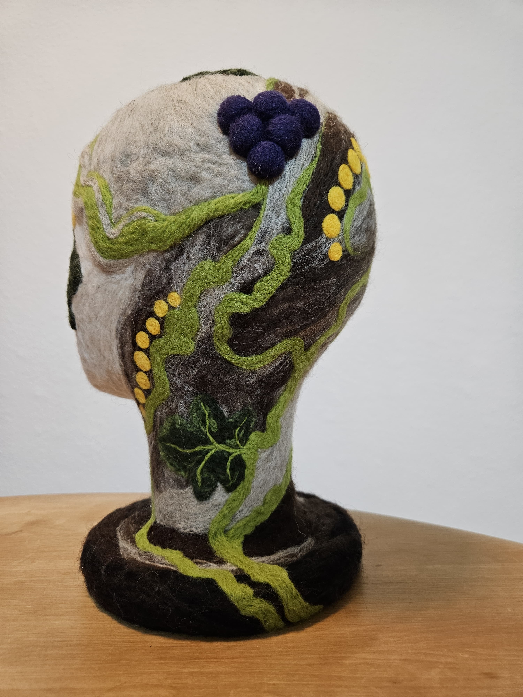
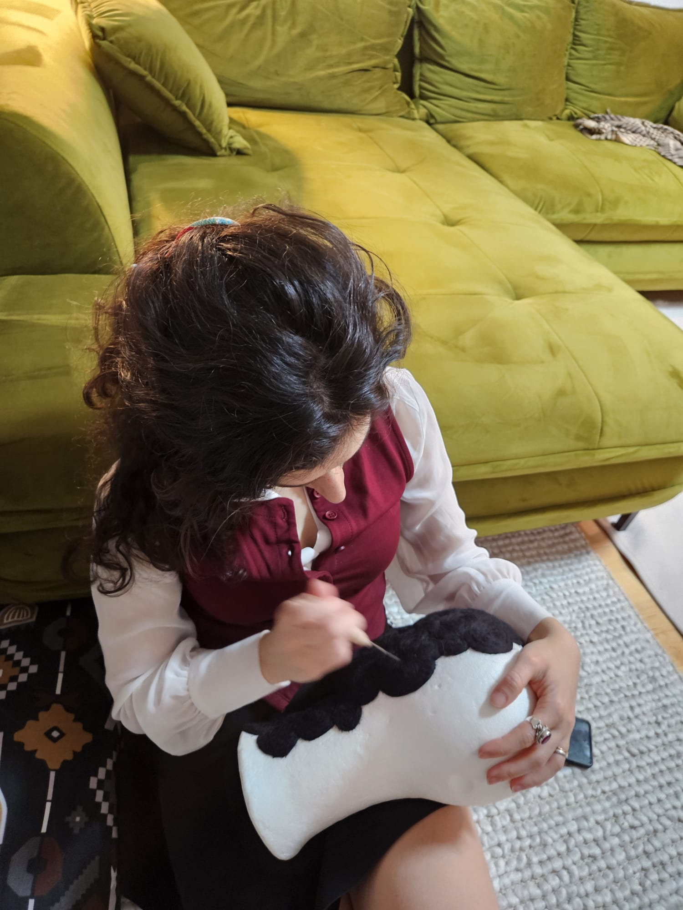
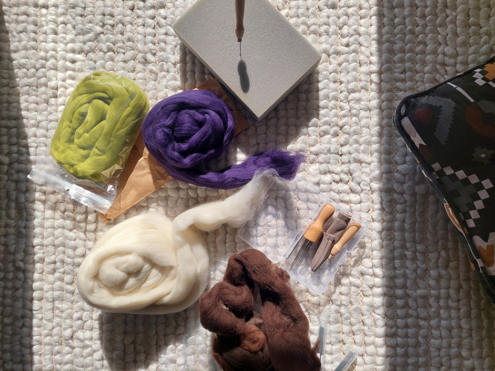
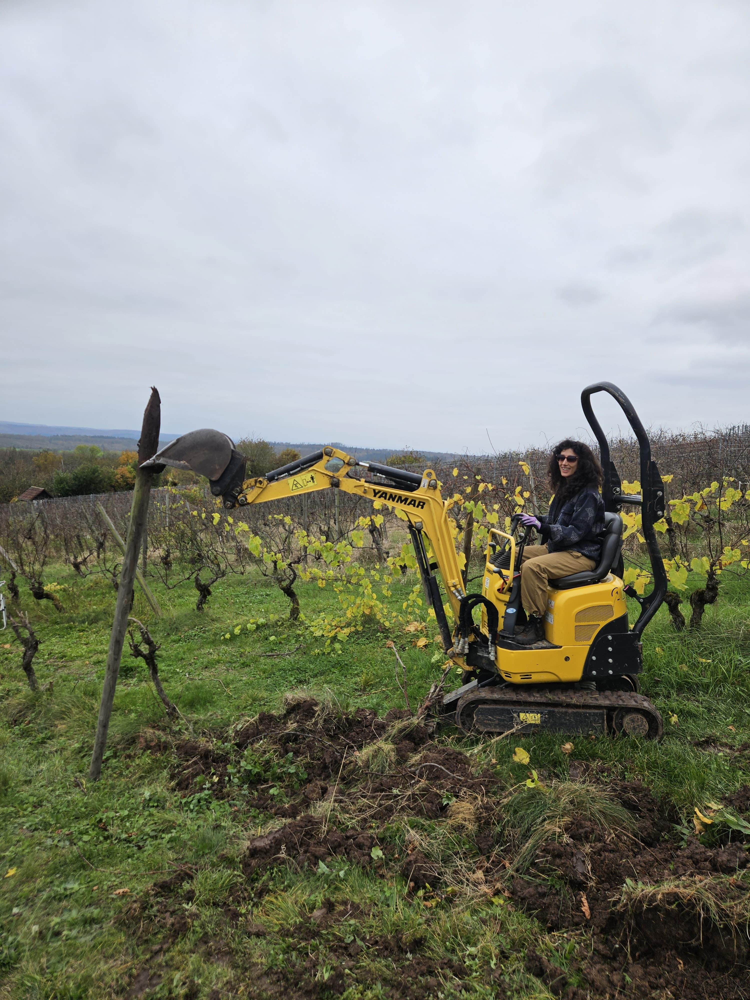
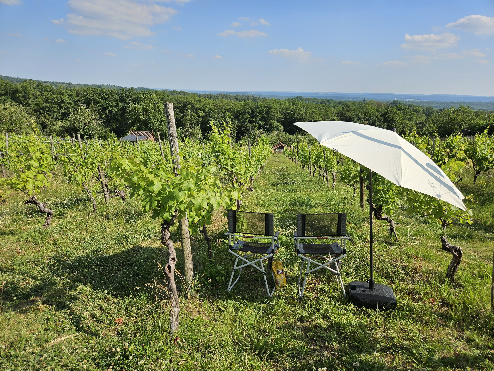
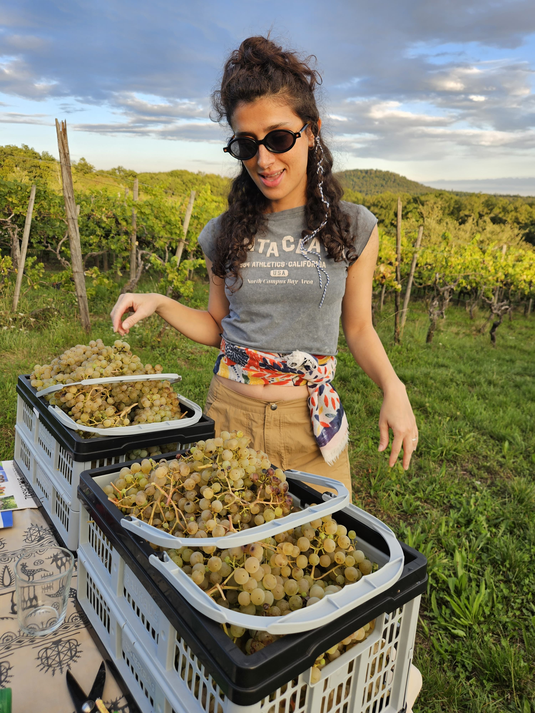

sukaleyan

Welcome to my little digital corner.
This is where I keep track of myself — someone who's mostly all over the place. One thing holds it all together, though: wine. Not as a drink, but as history, culture, imagery, and art.
Everything here grows from the vine.
It all started with a tiny vineyard that fell into my life by accident. There was something about the plants — as mysterious as the final product. The vines were so beautiful, I couldn't stop looking at them. I wasn't sure what I was feeling, but it was strong.
I needed to learn. I started digging into books, going to wine festivals, researching online, following Masters of Wine on social media, getting on mailing lists of wine publications. After trying all of this, I found my own way in: through art history, the thing I already knew.
Now I look for wine everywhere — not in glasses, but in visual and material culture. In architectural details, museums, public spaces, libraries. I collect what I find in an ever-growing archive. Based on my findings, I'm developing an app called Spot the Wine to invite others to explore these traces with me.
All of this lives under Runic Grapes — where I collaborate with artists inspired by wine, research its art historical context, and curate objects in which wine and its world are embedded.
I also create work myself — yes, wine again. And I still tend that tiny vineyard in Württemberg.
I told you, I'm all over the place. But just like a vine, I climb on anything.
felt objects
I work with wool — shaping, needling, felting it into forms. Heads, masks, vessels, strange soft things. Each piece takes shape slowly, layer by layer.



My felt work lives at Runic Grapes — a platform I created for wine-inspired art and objects.
collecting wine imagery
It started after we bought our vineyard. Grapevines had always been everywhere where I come from — Anatolia — but so abundant that I never really paid attention. Now I can't stop looking.
As an art historian, I had to pursue this new obsession through images. Without even realizing it, I started looking for vine and wine imagery everywhere. Building facades, city signs, cathedral towers, village squares, library shelves. And when I find them, I collect them.


the vineyard
1500 square meters of vines in Württemberg. We inherited it by accident and fell in love on purpose.
We're learning as we go — pruning in winter, watching in spring, harvesting in autumn. Making small batches of wine that probably won't win awards but taste like ours.
The vineyard is where everything converges: the research, the making, the living.


